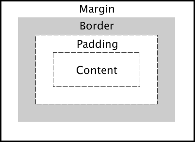

Prework Study Guide

✨ Open the Console to See What's Happening ✨
HTML
- All HTML documents should start with a !DOCTYPE Declaration.
- html is the parent element to an entire HTML document.
- The head element contains information about the webpage, that is not displayed on the interface (e.g. hyper-linking HTML and CSS).
- The body element represents the visible content shown to the user.
- The following are all children of the body element: header, main, footer, script
- The header is used for creating the heading. Every HTML document should only contain one h1 element, which is generally found in the header. img elements can also be found in the header.
- Headings can be created with h1, h2, h3, h4, h5 and h6, with h1 being the largest.
- The main element will be made of sections or paragraphs (section or p). Sections will display the bulk of information available to the user. They can contain their own headings (header) or ordered/unordered lists (ul/ol) which are given bullet points via li
- Sections can have classes and ids set for them with the tags class = “...” and id = “...”
- To place images within a webpage, the element img is used. src says where the img is sourced from, and alt gives a caption of the image (useful for visually-impaired or poor internet connection). E.g. img src="./assets/bowtie-cat.png" alt="Profile image of cat wearing a bow tie."
CSS
- CSS is used to style a webpage, by allowing you to select individual (or multiple (DRY)) tags (e.g. header, footer, img, ul, h1) or classes/ids (if you set them).
- DRY (do not repeat yourself) If you have two selectors that will be affected by the same declarations, you can put them together with a comma, and only have to write the declaration once (e.g. header, footer {width:100%;}).
- The CSS box model includes: margin, border, padding and content.
- The elements of the box model can be set to centre their contents or to push them more toward one side of the webpage (e.g. padding: 0,40,0,40; will create distance on the left and right of its contents but nothing above/below. The above is the long way of writing padding, a quicker way would be padding: 0,40.
- The elements of the css box model can also be set to a default by use of commands like margin-left: auto;.
- Other things you can style are: width, height, color, background-color, display and box-shadow (transparency of the text).
- To style a class you have to place a . in front, e.g. .class. To style an id you have to place a # in front, e.g. #id.

Git
- git status: checks what branch we are currently on
- git checkout -b branch-name (e.g. feature/add-html): creates a new branch and switches to it
- git add -A: will add the changes you've created in VS code to the branch you are in
- git commit -m "your message" will attach a message to the branch you're in
- git pull origin main: will pull the main branch into the feature branch
- git push origin feature/...: will push your branch onto your github account
- cd: stands for change directory, it changes the branch you are in, e.g. cd main will put you into the main branch
JavaScript
- Control flow is the order in which a computer executes code in a script. The flow is read from top to bottom. This is particularly important for something like else if statements because once the code finds the first true Boolean, it will influence what appears on the webpage.
- Some common elements within JS are: var (variable), function, if/else if, and console.log.
- variables are used to make containers interactive, e.g. the code var topics = ['HTML', 'CSS', 'Git', 'JavaScript']; enables these four classes to become interactive by making them all a topic which can be selected randomly or by user selection.
- Variables/values are items which can change based upon user interactivity with the webpage. Not all parts of the code will be used if the program doesn’t receive the necessary input.
- The code var randomTopic = topics[Math.floor(Math.random() * topics.length)]; creates a variable named randomTopic whose function is to randomly assign a number to the variable topics.
- functions are commands that already exist, two of them are listTopics and selectTopic, they are used to tell the terminal what function it is going to perform. Then the function is given a command like an else if statement so it knows what method to use to perform its function.
- console.log statements are statements which may appear on the webpage, e.g. an else if statement may have multiple console.log statements, but only the else if command which is truthy will have its console.log statement appear.
- else if statements all begin with an if, are followed with an else if and are finished with and else. The finishing else statement will be printed on the screen if none of the else if statements are truthy.